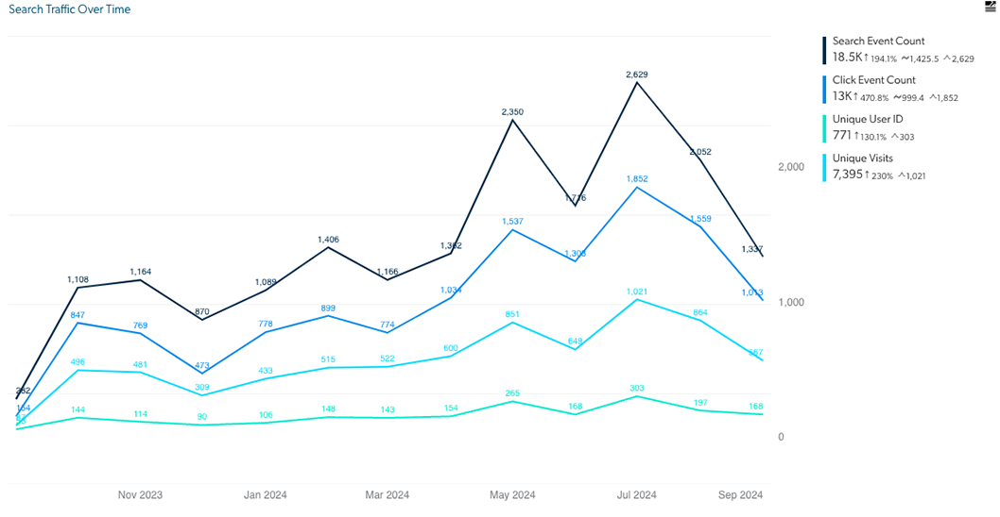

Increased search events by 194%
Who: Technology organization at Comcast
What: UX, UI design, implementation of generative AI
Result: Increased searches by 194% over one year
Project Summary
We created a developer specific search engine to ensure developers could easily find the relevant information they were searching for. This meant indexing more sites than those used by the existing company intranet search site and using more dynamic filtering for the returned results. After the success of our Beta launch, we received so many requests about how to be included in the search results that we added the process to our FAQ page. This search engine was also the first project I worked on that incorporated generative AI and would serve as the template for future generative AI projects.
The Problem: Developers were left searching in the dark
The company intranet was optimized for general employee needs - HR content, corporate announcements, etc. Developer specific sources like Confluence pages were buried or not indexed, making it hard to locate technical resources. Developers resorted to sharing links manually or bookmarking personal resources.
Fast Track to Relevant Information
Developers had to sift through scattered SharePoint sites and buried content, often relying on bookmarks or shared links to find what they needed.
With the introduction of a developer specific search engine more relevant sources were able to be indexed and filtered to get developers the answers they needed in less clicks. Dynamic filters allowed developers to view results by source and content type reducing time spent searching.
We also wanted to ensure the search experience was similar to other large search engines that users were already accustomed to using. This meant showing search history as you typed your query in the search box, having the ability to hit enter to start the search as well as clicking the search icon and viewing results by relevance. We also ensured the search engine was optimized for use on mobile.
My Role
I led the UX and UI redesign using Adobe XD to prototype new flows and layouts. I collaborated closely with engineers to implement React-based filtering, optimized the mobile experience and helped shape the generative AI query integration. I also participated in daily stand-ups and sprint planning using Jira, helping guide the product from Beta to full release.
Design Enhancements I led
- AI response with cited sources and feedback option
- Lines between results
- Visible URLs
- Enhanced filters
- Decluttered layout
- VPN tags

Outcome Statement
The creation of a developer specific search tool led to an increase of search events by 194% over the course of one year. Devs no longer had to rely on a company focused intranet site. The developer specific search site indexed a broader range of sources, all curated specifically for developer needs. The AI component summarized relevant documents and highlighted key insights with citations, reducing time to information and increasing user trust.
Reflection
Being a technology organization populated by software engineers led to a greater understanding of what should be returned when searching for information. We were able to work with the appropriate teams to ensure their valuable data could be indexed, promoted and returned in our search results.
Decreased ticket submission by 30%
Who: XPE Organization at Comcast
What: New data ingest, implementation of generative AI, UX/UI redesign
Result: 30% decrease in tickets submitted to XPE team
Project Summary
We designed a generative AI widget to answer employee questions about discounted products/services.
Outcome Statement
Within the first month post-launch, ticket submissions dropped by 30%.
Immediate Answers to Questions
The AI tool returned sourced responses and supported ongoing Q&A.
My Role
I was both PM and UX/UI Designer. I led cross-functional coordination and designed the UI.
Mandate
The goal was to reduce ticket load while handling authentication and dynamic data. I researched AI tools to guide design.
Created UX Principles for Organization
Who: Workforce eXperience Technology organization at Comcast
What: UX research
Result: UX principles created for organization
Project Summary
We analyzed help desk feedback and vendor UX approaches to define foundational principles.
Outcome Statement
Five principles were defined: intuitive usage, error prevention, reliability, expectation setting, and feedback.
Establishing UX as a Requirement
52% of negative feedback came from usability issues. Vendor interviews confirmed UX priorities.
My Role
I co-led interviews, synthesized findings, and wrote the first draft of the principles.
Mandate
We aimed to make UX a requirement and embed it in future projects. These principles now guide all new work.